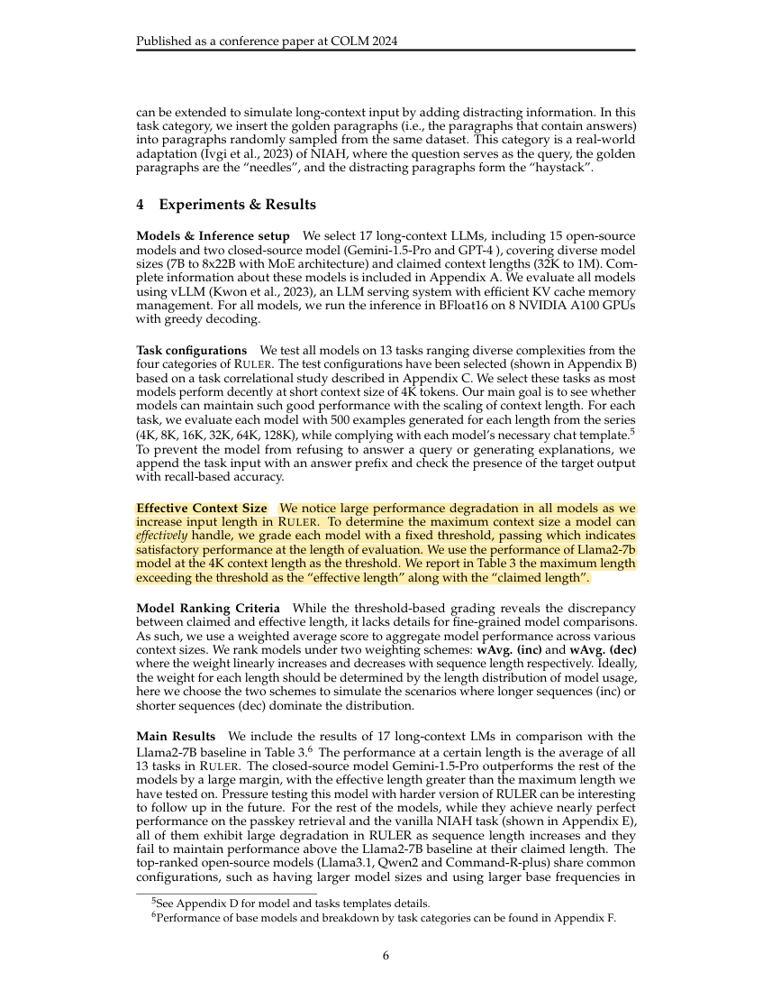
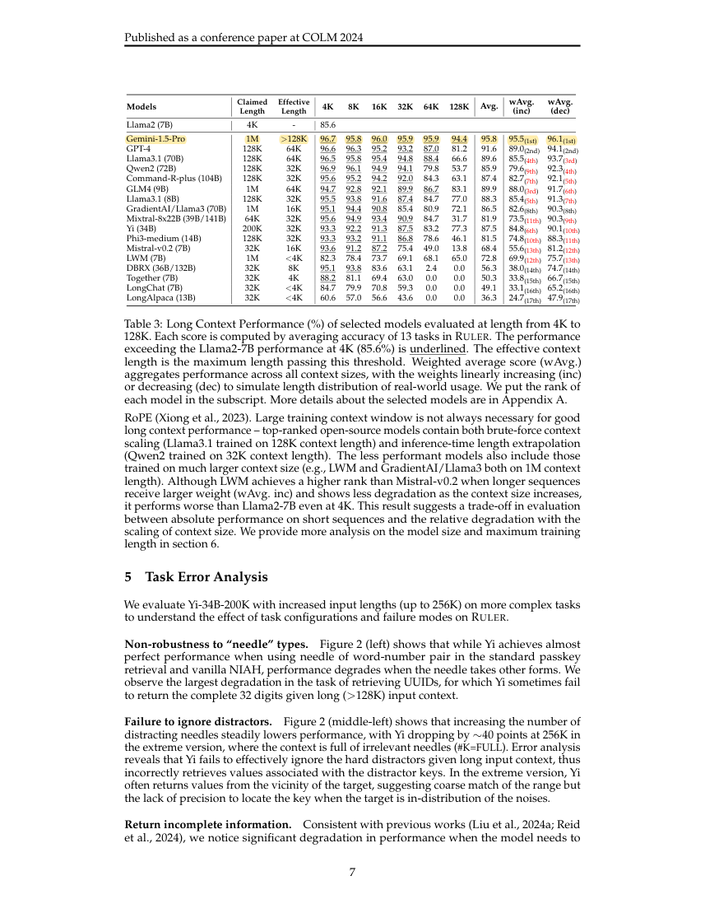
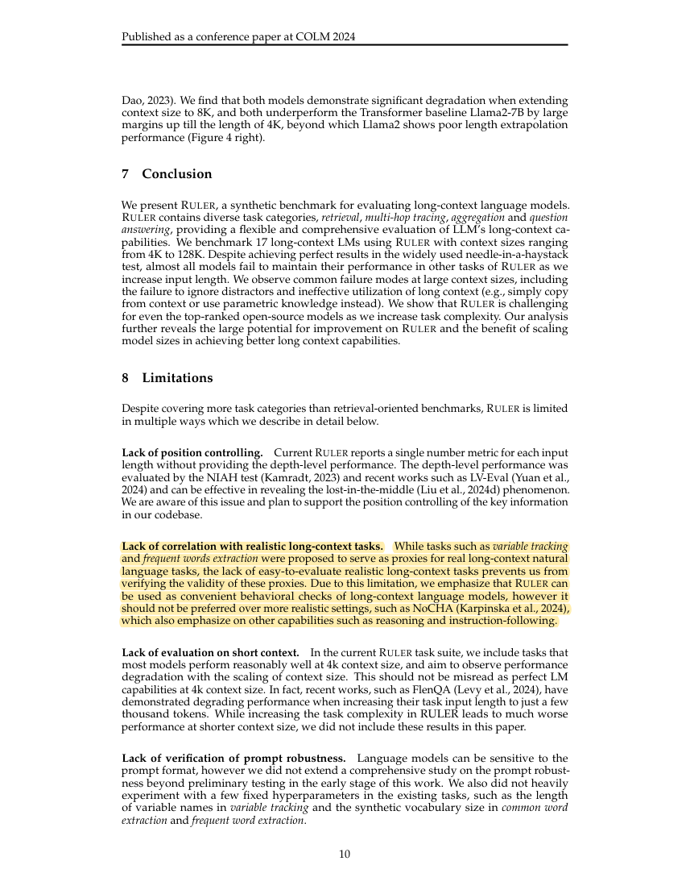
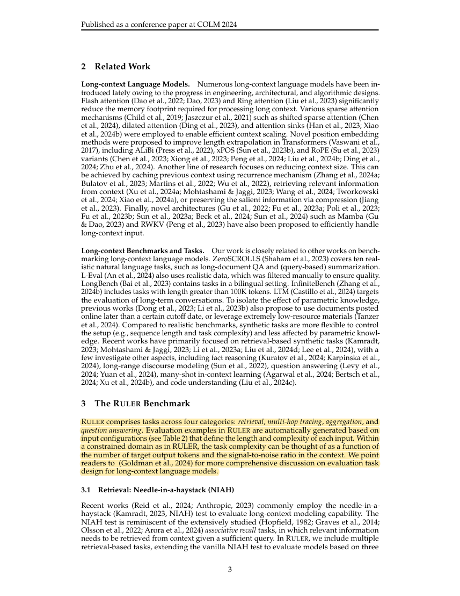

R37 · Full-text methods and results
RULER: What's the Real Context Size of Your Long-Context Language Models?
Conference on Language Modeling (COLM) · 2024
Cheng-Ping Hsieh, Simeng Sun, Samuel Kriman, Shantanu Acharya, Dima Rekesh, Fei Jia, Yang Zhang, Boris Ginsburg
RULER expands single-item retrieval to multiple evidence, tracing, aggregation, and QA tasks, separating accepted input length from task difficulty and usable capability.
Research question
Can models that succeed on a simple needle test maintain performance when several pieces of evidence and related operations are required?
RULER helps design diagnostic tests. It does not demonstrate that graphs are beneficial or replace validation on the target task.
Design, comparisons, and interpretation
- Four automatically generated task categories cover single/multiple keys, values, and queries; four-hop variable tracing; word-frequency aggregation; and expanded SQuAD/HotpotQA tasks.
- Content length and distractors were controlled. A correlation analysis selected 13 tasks; 17 models were tested on 500 examples per task and length, from 4K to 128K.
- The study used model chat templates and greedy generation, scoring recall of target outputs and averaging task scores for the overall result.
- Effective length was the largest tested length exceeding the 85.6% reference score of Llama2-7B at 4K. This is an evaluation threshold, not a physical window limit.
- Additional Yi experiments increased chains, hops, and distractors to analyze omissions, incorrect retrieval, copying, and aggregation failures.
These findings come from the source tasks and comparisons. Their relevance to pharmacy OSCE must be tested in our four stations.
Results and scope
- Table 3: Llama3.1-70B scored 96.5%/94.8%/66.6% at 4K/32K/128K; GPT-4 scored 96.6%/93.2%/81.2%.
- Gemini-1.5-Pro scored 96.7%/95.9%/94.4% in the same table and was relatively stable. The results do not support saying that every model declines substantially.
- Section 8 states that the relationship between proxy tasks and real settings was not validated, and prompt robustness was not comprehensively tested.
The models, tasks, samples, and scoring procedures do not define a universal long-context error rate.
Relevance to DualGraph-OSCE
It supports evaluating retrieval, multi-evidence completeness, and relationship tracing separately.
Study design implications
In OSCE, record whether an item’s required evidence is complete and whether drug–patient–rule relations are correct. A flat-evidence comparison with the same evidence budget can help isolate the contribution of explicit relations.
Claims this source does not support
- That the 85.6% threshold is appropriate for pharmacy OSCE.
- That RULER scores establish clinical knowledge or grading validity.
- That large-window models are necessarily inadequate for this project.
See its role in the DualGraph-OSCE method →Use in the manuscript
Introduction: motivate reliable evidence use
Nominal context size can differ from effective evidence use on multi-evidence tasks, with the gap depending on the model and task [R37].
Methods: explain the validation design
The proposed evaluation distinguishes evidence recall, relationship tracing, and final item decisions to locate errors [R37].
Discussion: state the limits
RULER is a behavioral proxy benchmark; it cannot define an effective-length or grading-validity threshold for pharmacy OSCE [R37].
The citation supports prior methods and findings. Any advantage of DualGraph-OSCE must be demonstrated by our own controlled comparison.
Original article and precise source locations
Reviewed version: the accepted author version, arXiv v3, whose first page identifies publication at COLM 2024. This reading uses v3’s 17-model results; v2 had 10 models and should not be mixed with it.
| Source location | Physical PDF page | Content |
|---|
| §3.1–3.4；Table2 | 3, 4, 5, 6 | Four task categories and input construction |
| §4；Table3 | 6, 7 | Sample sizes, evaluation threshold, and model results |
| §5；Figure2–3 | 7, 8 | Task difficulty and error analysis |
| §8 Limitations | 10 | Limits of proxy tasks and prompt robustness |
Effective length is an evaluation threshold
Source: §4; physical PDF page 6. Yellow marks identify the cited passage. These are source findings, not DualGraph-OSCE results.

R37-E2Relatively stable Gemini results
Source: Table3; physical PDF page 7. Yellow marks identify the model result row. These are source findings, not DualGraph-OSCE results.

R37-E3Limits of extrapolating to a real OSCE
Source: §8; physical PDF page 10. Yellow marks identify the cited passage. These are source findings, not DualGraph-OSCE results.

R37-E4Retrieval, multi-hop tracing, aggregation, and QA task design
Source: §3 The RULER Benchmark; physical PDF page 3. Yellow marks identify the cited passage. These are source findings, not DualGraph-OSCE results.
